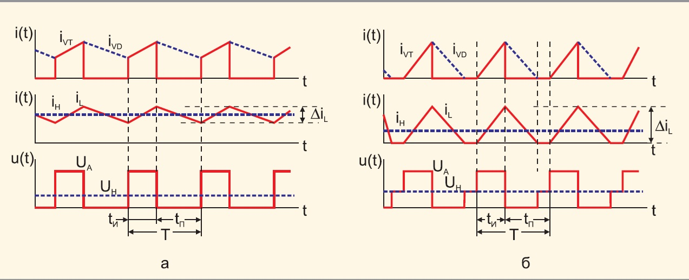
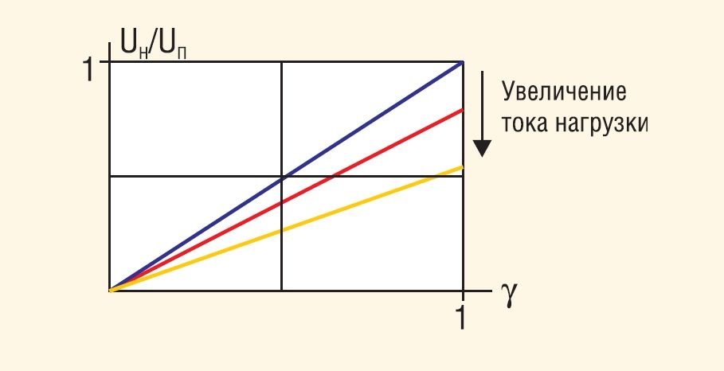
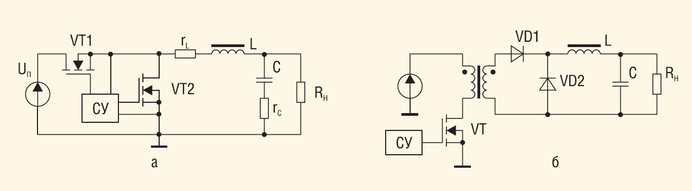
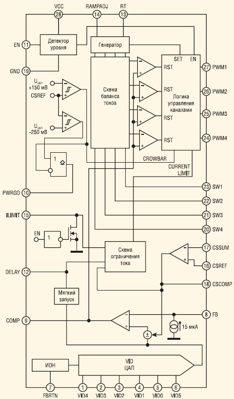
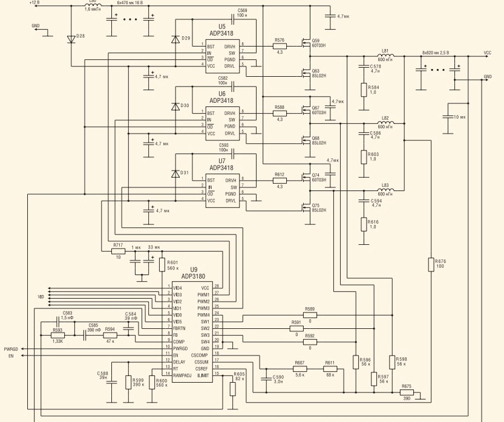

AC/DC-конвертер
Архитектура управления: DC-DC преобразователи как нервная система энергосистем.
Эволюция накопителей энергии была бы невозможна без развития систем управления и согласования. Батарея сама по себе выдает нестабильное химическое напряжение, которое падает по мере разряда. Чтобы связать этот сырой ток с чувствительной электроникой смартфона или мощным инвертором электромобиля, необходим посредник — DC-DC преобразователь (импульсный конвертер постоянного тока). Если сама батарея — это мускулы энергосистемы, то DC-DC преобразователи — её нервные узлы.
По своей сути это электронные устройства, осуществляющие дозированную импульсную передачу энергии со входа на выход с помощью управляемых (IGBT, FET транзисторы) и неуправляемых (диоды) ключей, а также накопителей — дросселей и конденсаторов.
Векторы технологического разделения
В современной схемотехнике преобразователи делятся на три ключевых топологических класса:
- Понижающие (Step-down / Buck): трансформируют высокий вольтаж в низкий. Классический пример — снижение 12-вольтового напряжения бортовой сети автомобиля до стандартных 5 В для питания микропроцессорной логики.
- Повышающие (Step-up / Boost): увеличивают выходное напряжение относительно входного. Без них не обходятся автомобильные аудиоусилители и зарядные контроллеры солнечных панелей, где низкий вольтаж генерации нужно «поднять» до уровня зарядного напряжения буферного аккумулятора.
- Универсальные (Buck-Boost): способны как повышать, так и понижать напряжение. Они незаменимы в сценариях, где входной вольтаж непрерывно колеблется (например, при глубоком разряде литий-ионной ячейки от 4,2 В до 2,5 В), а на выходе требуется строго фиксированная величина.
По архитектурному исполнению конвертеры делятся на бестрансформаторные и с гальванической развязкой. В последних входные и выходные цепи разделены обмотками трансформатора, что полностью исключает электрическую связь между ними. Такая развязка критически важна в импульсных блоках питания и медицинской аппаратуре (например, сканерах и электрокардиографах), где малейшая сетевая помеха или пробой могут стоить жизни пациенту или уничтожить прецизионную технику.
Функциональный базис и сферы экспансии
Современный DC-DC преобразователь решает одновременно четыре фундаментальные задачи:
- Коррекция: прецизионная подгонка вольтажа под жесткие требования конкретного чипа или привода.
- Стабилизация: удержание эталонного напряжения при сильных просадках или скачках на входе.
- Фильтрация: нейтрализация высокочастотных помех за счет гальванического разделения сред.
- Защита: мгновенная отсечка линии при коротких замыканиях, тепловой перегрузке или опасных токах.
Сегодня эти компоненты масштабировались от микроскопических чипов внутри смартфонов до промышленных модулей на DIN-рейку и контроллеров плавного пуска мощностью до 800 Вт и выше. Они управляют потоками энергии в светодиодном освещении, выстраивают топологию питания бортовых систем железнодорожного и авиационного транспорта, коммутируют сигналы в телекоммуникационных вышках связи и обеспечивают балансировку токов на мегаваттных ветровых и солнечных генераторах «зеленой» энергетики. Без этой кремниевой микроэлектроники даже самая емкая батарея будущего осталась бы бесполезным химическим резервуаром.
Схемотехника DC/DC преобразователей.
Важнейшей частью электронной аппаратуры является источник питания. От его надёжности и работоспособности во многом зависит не только качество функционирования, но подчас и сама возможность работы электронного устройства. В данной статье приведён анализ принципов работы DC/DC преобразователей, широко применяемых для построения источников питания.
Современная аппаратура характеризуется достаточно высокой сложностью, и часто для питания её отдельных узлов требуются различные напряжения. В случае наличия одного источника питания для получения разных уровней необходимо использовать специальные преобразователи (регуляторы). Особенно остро проблема получения различных питающих напряжений стоит в портативной аппаратуре. Если в устройствах, питающихся от сети, можно построить блок питания с необходимыми напряжениями, то в портативных приборах, работающих от автономных источников энергии, требуемые уровни напряжений можно получить только с использованием DC/DC преобразователей.
В данной статье мы рассмотрим толь ко основные типы DC/DC преобразователей, работающих в ключевом режиме, а именно регуляторы I, II и III типов. Ключевой режим работы позволяет получить достаточно высокий КПД в сравнении с линейными регуляторами. Требование получения высокого КПД особенно важно для приборов с автономными источниками энергии.
Рассмотрим особенности основных типов регуляторов.
Регулятор I типа (понижающий преобразователь)
Согласно названию – понижающий, – данный преобразователь обеспечивает регулирование выход ного напряжения в диапазоне от нуля до величины входного напряжения (в реальности верхняя граница не сколько меньше, что связано с потерями в элементах схемы). В англоязычной литературе понижающий регулятор называется «buck converter» или «stepdown converter».
Упрощённая схема регулятора I типа приведена на рисунке 1.

Силовой ключ VT преобразователя (см. рис. 1) может находиться в двух состояниях: открытом – ток протекает через ключ (интервал импульса – tИ) и закрытом (интервал паузы – tП). Продолжительность интервала импульса определяется коэффициентом заполнения:
Когда транзистор VT открыт, ток от источника протекает по контуру VT–L–нагрузка, нарастая от минимального значения до максимального (см. рис. 2а). В интервале, когда VT открыт, идёт передача энергии в нагрузку и происходит накопление энергии в катушке индуктивности. При закрытии транзистора катушка индуктивности выступает в роли источника тока, передавая накопленную энергию в нагрузку по контуру L–VD–нагрузка.
Выделяют два режима работы регулятора – режим непрерывных и прерывистых токов. В первом ток катушки индуктивности всегда больше нуля, а во втором существует интервал времени, в течение которого он равен нулю. Временные диаграммы для обоих режимов приведены на рисунке 2.

Регулировочная характеристика регулятора I типа для режима непрерывных токов (т.е. зависимость выходного напряжения от коэффициента заполнения γ) описывается выражением [1]:
\[ U_{\text{н}} = U_{\text{п}}\gamma - I_{\text{н}}(r_{\text{VT}} + r_{\text{L}}) - U_{\text{VD}}(1 - \gamma). \]Для идеального регулятора без потерь:
\[ U_{\text{н}} = U_{\text{п}}\gamma. \]
Как видно из формулы, регулировочная характеристика реального преобразователя зависит от тока нагрузки. Чем больше ток нагрузки, тембольше характеристика отклоняется от идеальной (см. рис. 3).

Основные отличия режима прерывистых токов заключаются в наличии интервала времени tП, когда ток катушки индуктивности (и диода) равен нулю. Для режима прерывистых токов характерны большие пульсации тока катушки индуктивности и тока конденсатора.
Регулировочная характеристика регулятора I типа в режиме прерывистых токов описывается выражением [1]:
\[ U_{\text{н}} = U_{\text{п}} \frac{2}{1 + \sqrt{1 + \frac{4K}{\gamma^2}}}, \]где К = 2L/RНT.
Как видно из этого выражения, напряжение в нагрузке нелинейно зависит от коэффициента γ.
Следует отметить, что режим прерывистых токов используется редко. Понижающие преобразователи проектируются так, чтобы в заданном диапазоне токов и напряжений нагрузки сохранялся режим непрерывных токов катушки индуктивности. Но, тем не менее, надо иметь в виду, что режим прерывистых токов возможен при падении тока нагрузки ниже критического значения.
Для обеспечения режима непрерывных токов индуктивность L должна выбираться согласно следующему условию [1]:
\[ L \ge \frac{U_{\text{н}} \left[ 1 - \frac{U_{\text{н}}}{U_{\text{п max}}} \right] T}{\Delta I_L} . \]Различают две основные модификации схемы понижающего преобразователя – синхронный понижающий преобразователь (synchronousbuck converter) и рямоходовойпреобразователь (forward converter).

В схеме синхронного преобразователя (см. рис. 4а) диод заменён МОП транзистором VT2. Так как падение напряжения на МОП транзисторе может быть меньше падения напряжения на диоде при одинаковых токах, то КПД схемы может значительно возрасти, особенно при значениях выходного напряжения, соизмеримых с падением напряжения на диоде. Другая особенность заключается в том, что синхронный преобразователь работает только в режиме непрерывных токов, что объясняется способностью МОП транзистора проводить ток в обоих направлениях (от стока к истоку и наоборот).
В схеме прямоходового преобразователя (см. рис. 4б) обеспечивается гальваническая развязка входного и выходного напряжений. При открывании транзистора VT по первичной обмотке трансформатора T начинает протекать ток, наводящий во вторичной обмотке ЭДС индукции, через диод VD1 начинает течь ток, заряжающий через дроссель L конденсатор C. Таким образом, рабочим является прямой ход преобразователя, благодаря которому он и получил своё название.
При закрытии транзистора VT ток через первичную обмотку начинает уменьшаться, соответственно, напряжение на вторичной обмотке приобретает обратную полярность, диод VD запирается. Ток дросселя L замыкается по контуру L–R2,С–VD2. Следует отметить, что на трансформаторе часто размещают дополнительную размагничивающую обмотку, число витков которой равно числу витков первичной обмотки. Размагничивающая обмотка через диод подключается к источнику питания и служит для отдачи энергии, накопленной в магнитопроводе трансформатора T за прямой ход. В противном случае эта энергия рассеивается на ключе VT1, что резко снижает КПД источника и ухудшает тепловой режим транзистора.
Следует также отметить, что так как время размагничивания сердечника равно времени намагничивания, в прямоходовых преобразователях принципиально невозможно получить коэффициент заполнения импульса больше 0,5 – магнитопровод просто не успеет размагнититься, в результате чего преобразователь после запуска не выйдет на режим. Форсированное же размагничивание сердечника приводит к появлению огромнейших перенапряжений на транзисторе VT1.
Прямоходовой преобразователь используется для питания устройств, потребляющих мощность от единиц до десятков ватт.
Затронув общие принципы работы регулятора I типа, перейдём к рассмотрению реализации преобразователя на примере источника питания процессора Intel Pentium 4. Данный преобразователь имеет ряд интересных особенностей.
Ток потребления современных микропроцессоров достигает 100 А. Однако при столь огромном токе потребления напряжение питания процессора составляет всего около 1,5 В. Поэтому к источникам питания процессоров предъявляются очень жёсткие требования. Так, выходное сопротивление источника строго регламентируется и должно составлять для разных конфигураций от 1,24 до 1,5 мОм [2]. Но при токе 80 А на выходном сопротивлении 1,5 мОм будет рассеиваться почти 10 Вт! Без радиатора не обойтись… Однако можно построить такой источник, который будет контролировать выходной ток и пропорционально ему уменьшать выходное напряжение, тем самым моделируя резистивный характер выхода с нужным сопротивлением. Наиболее оптимальным решением построения такого источника питания является использование регулятора I типа с входным напряжением 12 В.

Для питания процессоров на ма теринских платах на базе чипсетов i848/i865 используются регуляторы, построенные на микросхеме ADP3180 компании Analog Devices или аналогичной, функциональная схема которой приведена на рисунке 5. ADP3180 представляет собой специализированный многоканальный ШИМконтроллер, предназначенный для преобразования 12 В в напряжение питания процессора. Такой регулятор может иметь от двух до четырёх независимых каналов. Высокие значения выходного тока делают невозможным построение источников питания процессора по одноканальной схеме. Это объясняется тем, что в этом случае потери в ключах и дросселе будут достаточно велики, а установить ключи на радиатор в рамках материнской платы и изготовить миниатюрный дроссель с рабочим током порядка 80...100 А не представляется возможным. При использовании нескольких независимых каналов эти проблемы отпадают. Кроме того, ИМС ADP3180 имеет схему баланса токов, позволяющую либоуравнять токи каналов, либо распределить их в определённой пропорции, что будет рассмотрено при описании схемы включения.
Значение питающего напряжения VCC процессора Pentium 4 определяется выдаваемым им 5 разрядым цифровым кодом VID. Следует отметить, что новейшие процессоры Intel Pentium в корпусе с 775 выводами выдают уже 6 разрядный код VID, что связано с уменьшением шага дискретности сетки выходных напряжений источника питания процессора. Каждый процессор имеет своё значение данного кода, наиболее современные могут даже изменять его динамически, «налету», в зависимости от степени загруженности и температуры.
Схема включения ИМС ADP3180 на материнской плате ASUS P4P800S на базе чипсета Intel 848P представлена на рисунке 6.

Источник питания имеет три канала, каждый из которых представляет собой синхронный преобразователь, управляемый драйвером ADP3418 компании Analog Devices. Сигналы управления каналами подаются с выходов PWM ШИМконтроллера на входы IN драйверов. Высокий уровень этого сигнала соответствует открытому верхнему транзистору полумоста, низкий – открытому нижнему. Число рабочих каналов определяется ШИМ контроллером в момент запуска сканированием выходов PWM. Если оказывается заземлённым вывод PWM4, то контроллер работает в 3 канальном режиме, если же заземлены оба вывода PWM3 и PWM4, то в 2 канальном.
Номинальное значение питающего напряжения устанавливается формулой
\[ U_{\text{СС}} = U_{\text{VID}} - \Delta U - I_{\text{СС}}R_{\text{вых}}, \]где UVID – напряжение, соответствующее коду VID, ICC – потребляемый ток, RВЫХ – выходное сопротивление источника питания процессора, ΔU – предельное отклонение напряжения. Исходные данные для расчёта ΔU и RВЫХ выбираются согласно [2]. Максимальное отклонение напряжения питания от номинального значения в обе стороны не должно превышать ΔU.
В качестве датчика тока выступает активное сопротивление выходных дросселей источника питания. Однако для измерения падения напряжения на нём приходится прибегать к специальным методам. Дело в том, что на выходе полумоста имеется пульсирующее напряжение, на другом выводе дросселя – постоянное, поэтому напряжение с выхода полумоста следует сначала сгладить активным фильтром, а затем уже сравнить с напряжением на выходе. Их разность будет равна падению напряжения на датчике тока.
Активный фильтр выполнен на ОУ в составе микросхемы. На неинвертирующий вход (CSREF) подаётся напряжение с выхода источника питания процессора, на инвертирующий (CSSUM) – просуммированные рези сторами R596…R598 сигналы с выхода полумостов. С выхода ОУ фильтра сигнал подаётся на схему ограничения тока, срабатывающую при превышении установленной величины выходного тока. Этот сигнал также по даётся и на специальный источник, задающий смещение на входе ОУ ОС для уменьшения выходного напряжения при росте тока. Смещение напряжения ΔU задаётся резистором R593 при протекании через него тока 15 мкА от внутреннего источника тока.
ИМС ADP3180 выдаёт также специальный сигнал Power Good (вывод 10), высокий уровень которого говорит о том, что выходное напряжение находится в пределах –250...+150 мВ относительно номинального. При выходе из этих пределов срабатывает соответствующий компаратор, сигнал с которого подаётся на вход логической схемы, формирующей сигнал Power Good. При превышении значения номинального напряжения на 150 мВ выдаётся внутренний сигнал CROWBAR, по которому логика управления каналами открывает нижние ключи синхронного преобразователя, что в конечном счёте приводит к уменьшению напряжения на выходе. Таким способом осуществляется защита от перенапряжения.
РЕГУЛЯТОР II ТИПА (ПОВЫШАЮЩИЙ ПРЕОБРАЗОВАТЕЛЬ)
Повышающий преобразователь (boost converter, или step up converter) используется в тех случаях, когда требуется получить выходное напряжение, превышающее входное. Как и все рассматриваемые регуляторы, данный преобразователь не обеспечивает гальванической развязки.
Упрощённая схема преобразовате ля приведена на рисунке 7.

Когда транзистор VT закрывается (интервал паузы tП), ток катушки индуктивности замыкается в контуре источник питания–катушка индуктивности L диод VD нагрузка. Конденсатор Сф заряжается током iС(t) ≈ iL(t) – IН. Таким образом энергия, на копленная в катушке индуктивности, передаётся в нагрузку и определяет уровень выходного напряжения.
Как и для понижающего преобразователя, можно выделить два режима работы регулятора – режим непрерывных и прерывистых токов. В первом ток катушки индуктивности всегда больше нуля, а во втором существует интервал времени, в течение которого ток катушки индуктивности равен нулю. Временные диаграммы для обоих режимов приведены на рисунке 8.
Регулировочная характеристика регулятора II типа для режима непрерывных токов описывается выражением [3]:
\[ U_{\text{н}} = \frac{U_{\text{п}}}{1 - \gamma} - \frac{I_{\text{н}}(r_{\text{VT}} + r_{\text{L}})}{(1 - \gamma)^2} - U_{\text{VD}}. \]Для идеального регулятора без потерь:
\[ U_{\text{н}} = \frac{U_{\text{п}}}{1 - \gamma}. \]Как видно из формулы, регулировочная характеристика реального преобразователя зависит от тока нагрузки. При большом токе появляется характерный максимум на характеристике для значений γ, близких к 1, обусловленный потерями в преобразователе. При дальнейшем увеличении коэффициента заполнения потери начинают значительно уменьшать энергию, передаваемую в нагрузку. Таким образом, напряжение в нагрузке падает (см. рис. 9).
Как видно из рисунка 9, напряжение на выходе ограничивается некоторым значением, определяемым сопротивлением потерь. Проектируя реальные источники питания, необходимо учитывать этот факт и ограничивать максимальное значение коэффициента заполнения. Если необходимо получить напряжение, значительно превышающее входное, то необходимо использовать модификации регулятора I типа с трансформатором.
Основные отличия режима прерывистых токов заключаются в наличии интервала времени tП, когда ток катушки индуктивности равен нулю.
Регулировочная характеристика регулятора II типа в режиме прерывистых токов описывается выражением [3]: